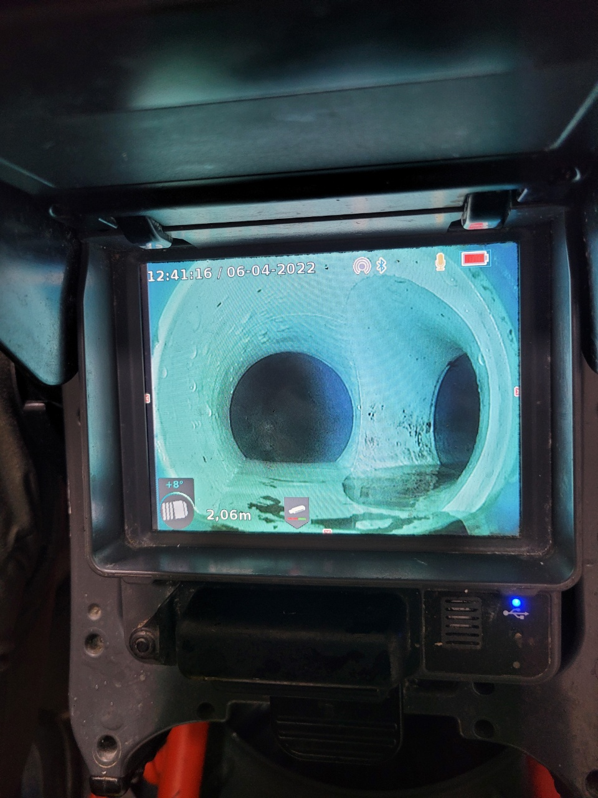
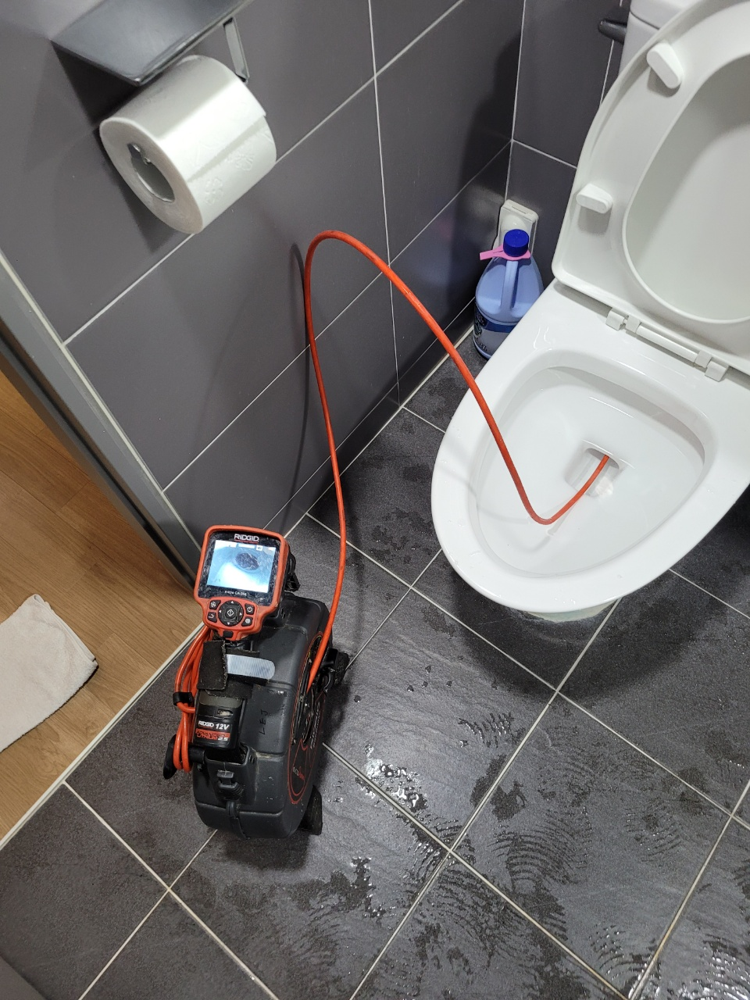
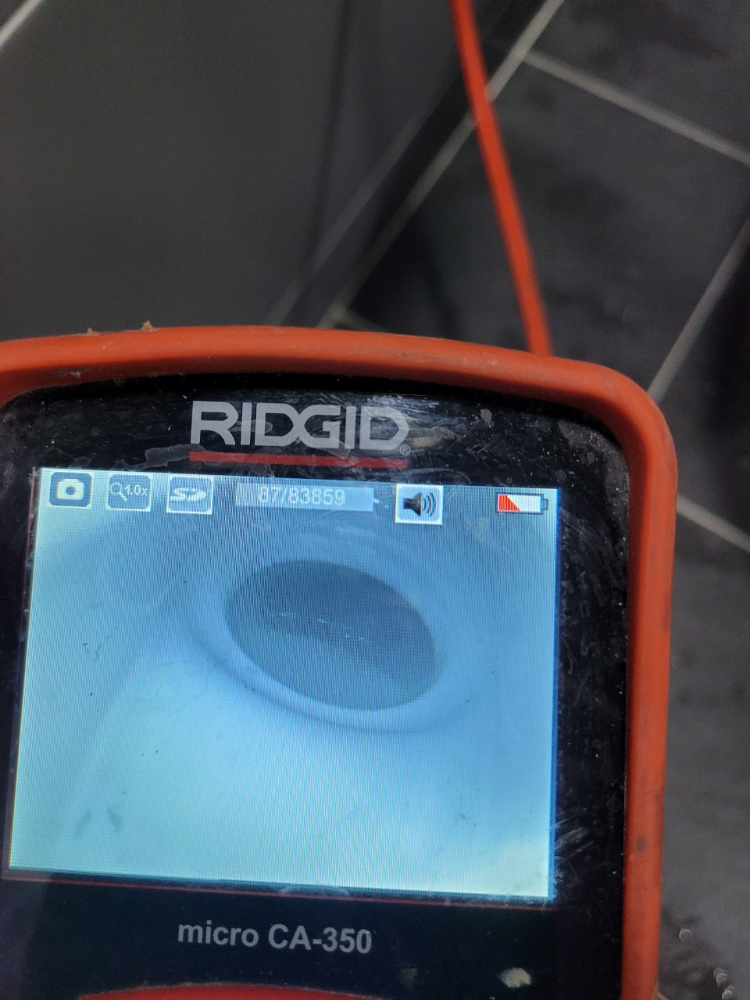
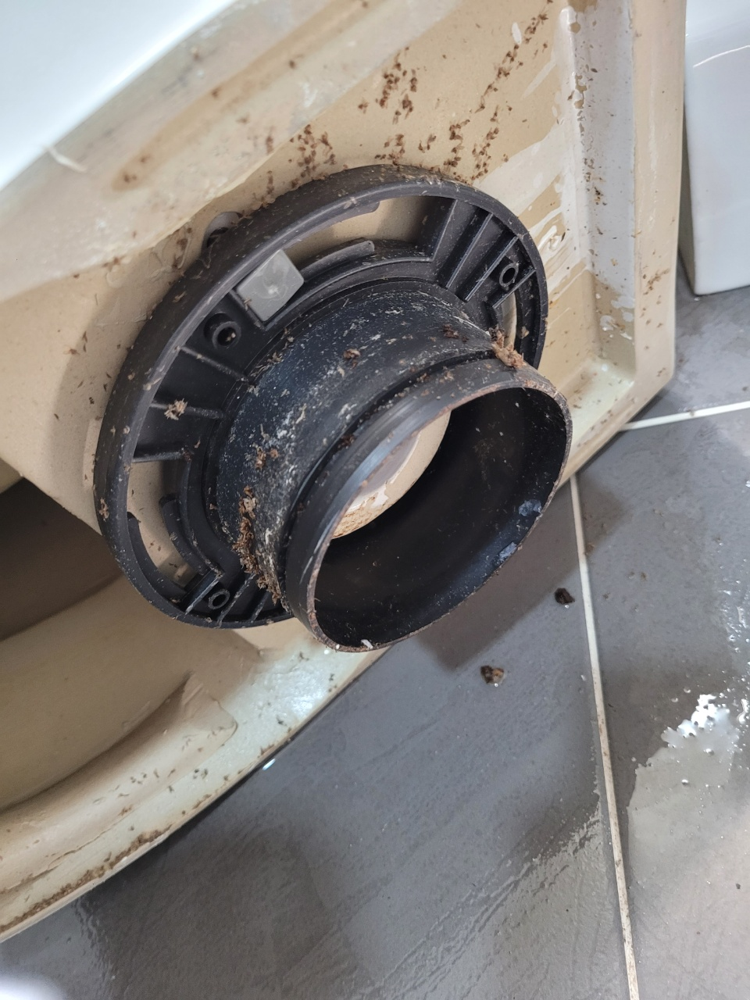
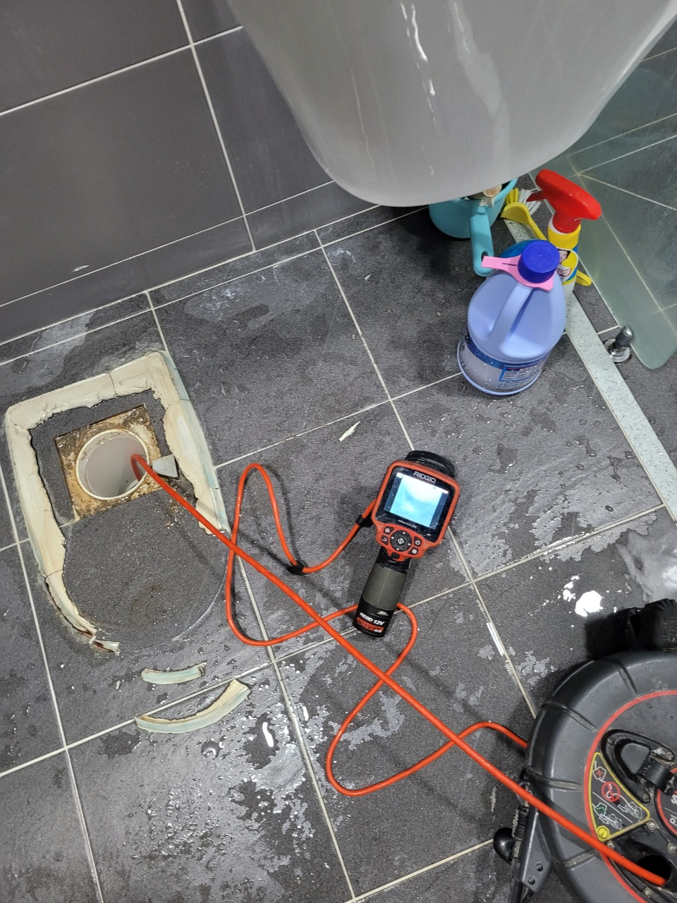
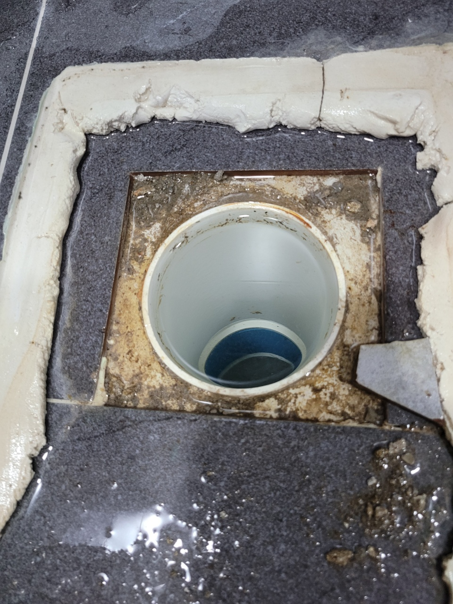
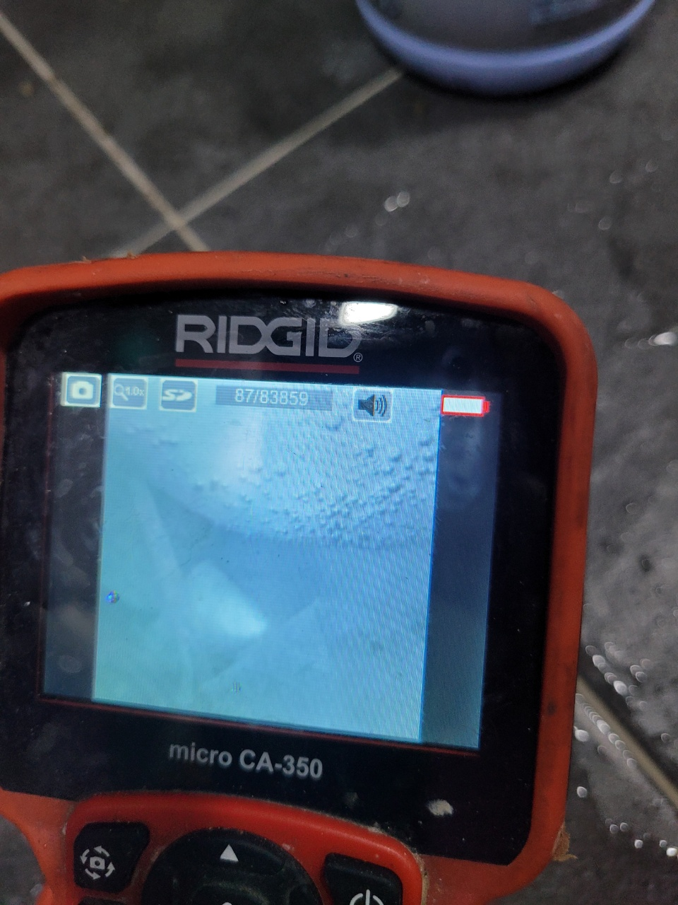
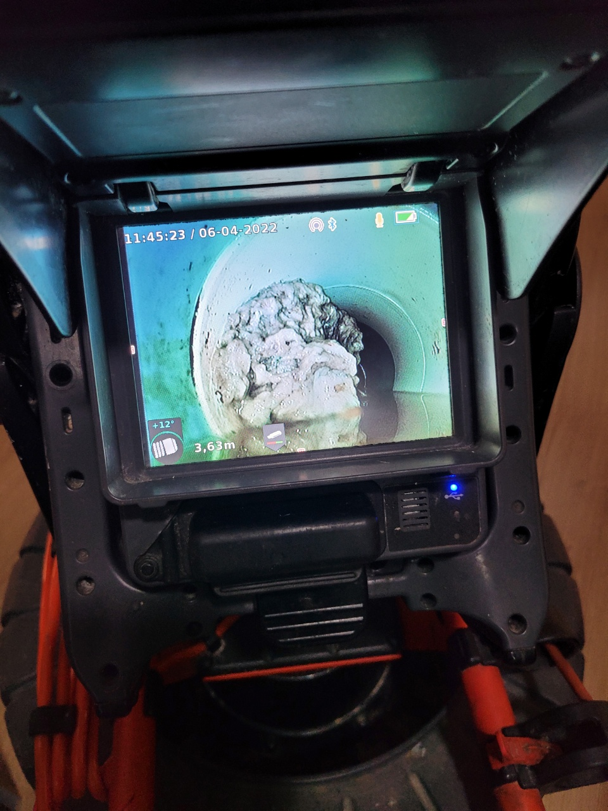

🏠 광주 신현리 문형리 변기 하수구 막힘 해결 깔끔한 마무리까지
광주 기흥 변기막힘 전문 시공 후기

📋 작업 개요
- 위치: 광주 기흥, 기흥, 광주
- 서비스 유형: 변기막힘, 하수구막힘, 배관막힘, 역류해결, 배관청소, 설비공사
- 작업 일시: 2022. 4. 24. 11:25
- 업체명: 하수구수사대 (010-5615-2118)
🔍 문제 상황
광주 신현리 문형리 변기 하수구 막힘 해결
배관은 다양한 폐수와 오물들이
지나가다 보니 오래 사용할수록
내부에 석회가 생기기 쉽습니다.
하지만 신축 건물이거나
리모델링을 한지 얼마 되지 않았다면
너무나 당황스러우실 텐데요.
공사 도중에 발생한 먼지들이
관을 타고 흐르다 관을 막게 되고,
결국 시원하게 물이 내려가지 않는
상황이 발생합니다.
이번에 다녀온 현장도
새로 건설한지 얼마 되지 않아
변기가 잘 내려가지 않았다고 해요.
다른 하수구에서
냄새도 심하게 올라온다는
이야기를 듣고 서둘러 현장에 출동하여
광주 신현리 문형리
변기 하수구 막힘 해결을 하고
돌아왔습니다.
현장에 도착을 하니
외부에서 보기엔
아무런 이상이 없어 보였는데요.
물을 내려보고

🔎 원인 분석
💡 전문가 진단: 하수구수사대최신장비보유!1년as 보장!주말,공휴일도 ok!010-2340-2118
세면대의 물도 틀어보니
변기가 잘 내려가지 않는 것을
확인할 수 있었습니다.
이런 경우 두 가지로
구분할 수 있습니다.
변기와 하수구로 연결하는 부분에
공사가 잘못되었거나
이물질이 껴 있은 경우와
배관 내부에 문제가 있는 걸로
구분할 수 있는데요.
외관상으로는 확인하기가 어려워
내시경 카메라를 이용하여
근본적인 원인이 무엇인지
체크를 했습니다.
우선 변기 구멍을 통해
막힌 부분이 없는지를 확인했습니다.
사진을 보시다시피
딱히 이상한 부분은
확인하지 못했어요.
배관에 문제가 있을 것이라
판단하고 서둘러
변기를 제거하였습니다.
배관에 문제가 있을 경우
전용 장비를 사용해야 하기 때문에
변기가 설치되어 있을 경우

🔧 작업 과정
파손이 되거나
작업이 제대로 진행되지 않아
불가피하게 제거하는 과정을
거치게 됩니다.
변기 하수구 막힘 해결하고자
배관에 내시경을 넣어 확인해 보니
엄청난 크기의 이물질이
벽 쪽에 붙어 있는 것을 확인했어요.
이 정도의 사이즈는
우리가 사용하는 약품으로는
제거되지 않는데요.
만약 늦게 부르셨다면
자칫 배관에 엄청난 압박이 가해져
파손되거나 물이 역류했을
가능성이 높습니다.
원인을 발견했으니 깔끔하게 제거하고,
내부에 남은 찌꺼기들이
남아있지 않도록
배관 청소까지 진행하여
변기 하수구 막힘 해결을
완벽하게 마무리하였습니다.
위의 영상처럼 깔끔해진 배관을
고객님께 보여드린 뒤
제거했던 변기를
다시 연결해 드렸습니다.
사용 도중 흔들리거나
떨어지지 않도록
내부에도 실리콘을 꼼꼼하게 바르고
바닥과 연결되는 부위에도
빈틈없이 발라드렸어요.
눈으로 보이는 부분이라
더욱 신경을 써서
작업을 완료하였습니다.
변기 하수구 막힘 해결한 현장처럼
이유를 알 수 없는 상황이
계속 반복된다면 전문 업체를 불러
근본적인 원인을 찾아
해결하시기를 권해드립니다.
수년간의 경험과 노하우를 바탕으로


✅ 작업 완료
실력이 뛰어난 곳으로
고객님의 불편함을 없애드리고 있으니
언제든 도움이 필요하다면
연락 주시길 바랍니다.
하수구수사대
최신장비보유!
1년as 보장!
주말,공휴일도 ok!
010-2340-2118
경기도 용인시 기흥구 동백중앙로 191 8층 c8736호




⚠️ 하수구 배관 막힘 예방 및 관리 가이드
- ✅ 머리카락, 비닐, 물티슈 등 물에 분해되지 않는 이물질은 하수구 유입을 절대 금지해 주세요.
- ✅ 하수구 거름망을 씌우고 모여진 이물질은 주기적으로 쓰레기통에 바로 비워주셔야 합니다.
- ✅ 배관 노후가 심할 경우 이물질이 더 쉽게 걸리므로 주기적인 배관 세척(고압세척 등)을 권장합니다.
- ✅ 작업 후 1년 이내 재발 시 하수구수사대에서 무상 A/S 보증 서비스를 제공합니다.
💡 핵심 정리
- 확실한 장비 작업(내시경 점검 및 샤프트 스케일링)으로 원인을 뿌리 뽑습니다.
- 작업 후 1년 이내에 동일한 부위 재발 시 100% 무상 A/S 서비스를 보장합니다.
- 서울 · 경기 · 인천 전 지역에 24시간 언제든 긴급 출동할 수 있도록 항시 대기 중입니다.
❓ 자주 묻는 질문 (FAQ)
🚨 광주 기흥 변기막힘 문제로 고민이신가요?
정확한 원인 진단과 확실한 시공으로 재발 없는 해결을 약속드립니다.
24시간 긴급 출동 | 서울 · 경기 · 인천 전지역 | 1년 내 재발 시 무상 A/S